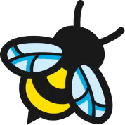
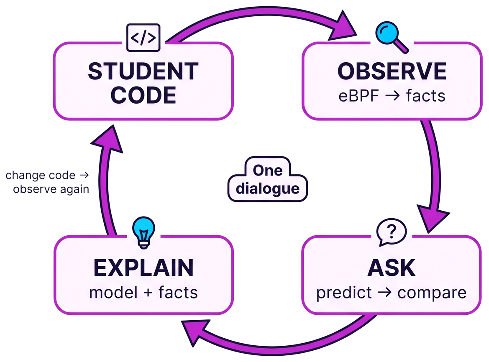
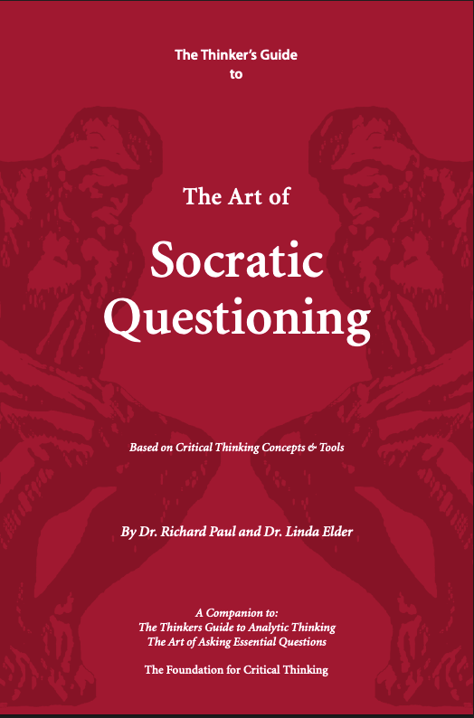

XtremeAI 2026 · November 24, 2026
Alejandro Mercado · DevOps & Automation Platform Engineer
IBM Champion | AWS Community Builder | Kiro Ambassador
What if the AI asked instead of told?
Learn by answering questions, not by receiving answers.
Socratic prompting Multi-agent debate Chain-of-Verification Self-Refine
blazebpf.com Work in progress · not production ready yet

eBPF Extended Berkeley Packet Filter
A Linux kernel technology that allows developers to run sandboxed programs in a privileged kernel context without modifying kernel source code or loading kernel modules.
Step 1
ObservationResult
{
"compilationSuccess": true,
"executionDurationMs": 412,
"syscallSummary": {
"read": {
"count": 1200,
"totalElapsedUs": 340000
}
},
"memory": { "peakUsageBytes": 24576 },
"security": { "flaggedCount": 0 }
}
Trimmed. Illustrative values.
Step 2
In: source code + observed facts → Out: an explanation grounded in those facts
Every number comes from the data
A projection says so, with its assumption
Missing data? Ask the student
Step 3

Illustrative example.
Ask what they expect to happen
Measure what really happened
Ask what differs, and why
Only now, grounded in the measurement
Works for any technology you can measure.

Cover: © Foundation for Critical Thinking
Free excerpt from the publisher: criticalthinking.org/files/SocraticQuestioning2006.pdf
What question would you want your AI to ask you?
linkedin.com/in/alexmarket · alexmarket.medium.com
Appendix · not part of the talk
How do you stop the tutor from giving away the answer?
A hint ladder of up to five levels, escalating with each attempt. The full solution is the last level, never the first.
Does the model still hallucinate?
It can. Observation grounds the facts, but the explanation still comes from a model. So it cites only measured figures, labels estimates, and asks when data is missing.
Is it safe to run student code?
Student code runs in a sandbox with namespaces and resource limits for memory, CPU and disk, and with bounded concurrency.
Which model do you use?
The one available through Amazon Bedrock. We have not compared alternatives yet, and the pattern does not depend on the model.
Does it work beyond eBPF?
That is the idea. COBOL and Fortran verticals share the same contract for observation, learner profile and tutor.
Is it ready to use? Any results?
Not yet. It is a work in progress, not production ready, and we have not run a controlled evaluation. We want to measure whether learners need fewer hints over time.
Appendix · not part of the talk
Chang (2023) · Socratic prompting
Prompt templates built on Socratic techniques such as elenchus and maieutics, for more precise and better-justified answers from language models.
Chang (2024) · SocraSynth
Two LLM agents argue opposing views under a human moderator, then move from confrontation to collaboration to support better reasoning.
Du et al. (2023) · Multiagent debate
Several instances of a model debate over several rounds to reach a common answer, improving reasoning and factuality and reducing hallucinations.
Dhuliawala et al. (2023) · Chain-of-Verification
The model drafts an answer, plans verification questions, answers them independently, and writes a verified final response.
Madaan et al. (2023) · Self-Refine
A model generates an output, critiques it and refines it in a loop, with no extra training. About 20% average gain reported across 7 tasks.
Paul & Elder (2006) · The Art of Socratic Questioning
A practical guide to Socratic questioning for teaching critical thinking: question taxonomies, classroom transcripts and guidelines.